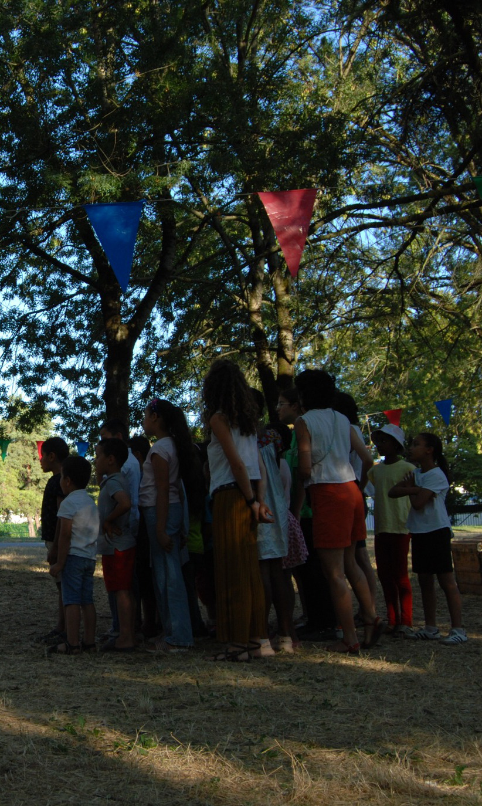

17 août 2024

Bienvenu dans le quartier du racontar où se propagent des rumeurs bariolées et des légendes urbaines !
Au ciel d’été, ça piaille, ça jase et ça papote avec les vents, les oiseaux ou entre enfants !
Aux abords du parc les histoires débarquent et nous racontent des rues bien animées que nous n’avons qu’à écouter !
Il y a des histoires vraies, des histoires difficiles à croire et même les gros bobards. Sur une pelouse sèche
et boisée, en face du City Stade, à coté de l’école, on vit et on raconte des grandes lessives participatives,
des Olympiades, des engueulades, des accolades, des nuits au ciel d’été sous la voûte étoilée et même les temps
anciens où la ville s’est érigée et où les arbres voyageurs ont poussé.
Tout cela en trois semaines de stage, en quinze ateliers de théâtre, en 12 matinées de barbouille auprès
d’une quarantaine d’enfants, au fil d’un spectacle en trois épisodes ! Voilà de quoi animer joyeusement
la période estivale pour l’Entresol !
Merci bien fort à tous les enfants et à tous leurs parents pour cet été dément, pour ces aventures historiques,
ces épopées hautes en couleurs et hautes comme trois pommes qu’on a vécues dans le quartier !